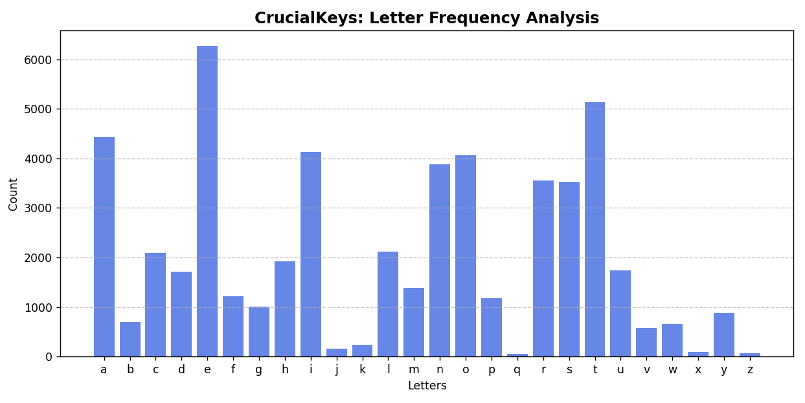

Crucial Keys
November 2025
Overview
This work was not an attempt to build anything complex, instead an attempt to understand a fundamental concept in the machine learning space. Rome wasn't built in a day, but Crucial Keys was.
To understand how machines do their learning, I started by asking myself, 'how do I learn?' After all, humans can't be much different from machines, right? We built them, right?
Whether it's by listening, reading, watching, or writing, all learning boils down to what's stored in the brain, or better yet, what can stick in your memory. So, how could I see first-hand how my computer stores memory, and how it learns when explicitly instructed?
Our main human-computer interaction comes at our fingertips when using the keyboard, marking a great starting point. This mini-project collects ~2 weeks of my keystrokes through lecture notes, emails, and other documents by parsing through text, extracting the characters, and visualizing the results of storage.
The results aren't groundbreaking, but something more foundational: a clearer, hands-on understanding of how raw inputs can turn to structured data, and how simple systems begin resembling building blocks of machine learning.
System
The system was designed as a very lightweight pipeline to collect, store, and update a running “memory” of my daily keystrokes.
At its core, the program reads text from documents (notes, emails, and other writing), extracts alphabetical characters, and aggregates their frequency over time. Each new file input updates an existing memory store, allowing the dataset incrementally grow rather than consistently recomputing from scratch.
- Data Collection: Text files are parsed and cleaned to isolate individual alphabetic characters
- Storage: A standing JSON file acts as long-term memory, storing character frequencies cumulatively
- Processing: Python's
Counterclass is used to efficiently update the letter counts - State Management: The system loads existing memory, updates with new data, and writes it back to disk (when told to do so)
JSON was chosen as the storage format here for simplicity, making the underlying data easy to see (and later visualize). The design prioritizes clarity over complexity, reflecting how foundational data pipelines operate before the need to scale to a larger system.
Rather than treating each dataset independently, we maintain a continuously evolving memory—resembling how learning systems amass information over time.
Code for the system is shown below:
Click to expand full Python script
import json
import os
from collections import Counter
MEMORY_FILE = "CrucialKeys/memory.json"
def load_memory():
if os.path.exists(MEMORY_FILE):
try:
with open(MEMORY_FILE, "r") as f:
data = f.read().strip()
if not data:
return Counter()
return Counter(json.loads(data))
except json.JSONDecodeError:
print("Warning: memory.json is empty or corrupted. Starting fresh.")
return Counter()
return Counter()
def save_memory(memory):
with open(MEMORY_FILE, "w") as f:
json.dump(memory, f, indent=2)
def analyze_text(text):
text = text.lower()
letters = [ch for ch in text if ch.isalpha()]
return Counter(letters)
if __name__ == "__main__":
print("CrucialKeys - Letter Memory System\n")
memory = load_memory()
print(f"Loaded memory: {sum(memory.values())} characters tracked so far.\n")
file_name = input("Enter filename in /TextData folder (ex: essay1.txt): ")
with open(f"CrucialKeys/TextData/{file_name}", "r", encoding="utf-8") as f:
text = f.read()
new_counts = analyze_text(text)
memory.update(new_counts)
save_memory(memory)
print("\nMemory updated successfully!")
print(f"Total characters tracked: {sum(memory.values())}")
print(f"Unique letters tracked: {len(memory)}")Pipeline
Visuals
And now for the results, if you were curious which keys are used most ...


The vizualizations in Fig. 1 and Fig. 2 above share a simple view into how frequently different keys are used in everyday life as a sophomore undergraduate.
The chart on the left (Fig. 1) shows the overall distribution of keys and their total frequencies, while the chart on the right (Fig. 2) presents a relative frequency heatmap in the shape of a keyboard, offering a more intuitive look at usage when distributed spatially.
As expected, common letters such as E, T, and A appear most frequently.
Most importantly, this step demonstrates how raw, or unstructured inputs are transformed into clear, interpretable patterns through a minimal data pipeline.
Click to expand Fig. 1 Python script
def load_memory():
"""Load stored letter frequencies from JSON file."""
with open(MEMORY_FILE, "r", encoding="utf-8") as f:
data = json.load(f)
return Counter(data)
def visualize_memory(memory, order="alphabetical"):
"""Visualize stored letter frequencies in bar chart form."""
letters = list(memory.keys())
counts = [memory[ch] for ch in letters]
if order == "alphabetical":
letters, counts = zip(*sorted(zip(letters, counts)))
elif order == "keyboard":
keyboard_order = list("qwertyuiopasdfghjklzxcvbnm")
letters, counts = zip(*sorted(
zip(letters, counts),
key=lambda x: keyboard_order.index(x[0]) if x[0] in keyboard_order else 999
))
plt.figure(figsize=(10, 5))
plt.bar(letters, counts, color="royalblue", alpha=0.8)
plt.title("CrucialKeys: Letter Frequency Analysis", fontsize=14, weight='bold')
plt.xlabel("Letters")
plt.ylabel("Count")
plt.grid(axis='y', linestyle='--', alpha=0.7)
plt.tight_layout()
plt.show()Click to expand Fig. 2 Python script
def load_memory():
if os.path.exists(MEMORY_FILE):
with open(MEMORY_FILE, "r") as f:
return json.load(f)
else:
print("No memory file found!")
return {}
keyboard_layout = [
list("qwertyuiop"),
list("asdfghjkl"),
list("zxcvbnm")
]
def create_heatmap_data(freqs):
max_len = max(len(row) for row in keyboard_layout)
max_val = max(freqs.values()) if freqs else 1
heatmap = []
for row in keyboard_layout:
row_data = [freqs.get(ch, 0) / max_val for ch in row]
while len(row_data) < max_len:
row_data.append(0)
heatmap.append(row_data)
return np.array(heatmap)
def plot_keyboard_heatmap(freqs):
heatmap_data = create_heatmap_data(freqs)
plt.figure(figsize=(10, 4))
plt.imshow(heatmap_data, cmap="coolwarm", interpolation="nearest", vmin=0, vmax=1)
for i, row in enumerate(keyboard_layout):
for j, key in enumerate(row):
plt.text(j, i, key.upper(), ha="center", va="center",
color="white", fontsize=14, fontweight="bold")
plt.title("CrucialKeys: Keyboard Letter Frequency Heatmap", fontsize=16, pad=20)
plt.axis("off")
cbar = plt.colorbar(label="Relative Frequency")
cbar.ax.tick_params(labelsize=10)
plt.tight_layout()
plt.show()Learning & Reflection
This project reinforced that raw data may come unstructured and gains use through deliberate storage, aggregation, and transformation. By building a simple system with persistent memory, I gained a more intuitive understanding of how data is incrementally accumulated and shaped into something that mirrors foundational mechanics behind early machine learning pipelines.